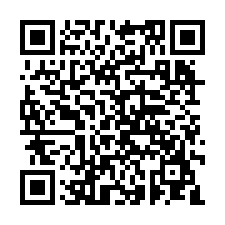

Recursos digitales para el profesorado
En este espacio se recopilan herramientas y recursos digitales útiles para el diseño, organización y desarrollo del proyecto.
Los recursos seleccionados facilitan la gestión del aula, la comunicación, la evaluación y el trabajo competencial mediante metodologías activas.
Esta recopilación pretende servir también como apoyo para otros docentes interesados en adaptar o reutilizar este proyecto en sus aulas.
Accede a la recopilación de herramientas y recursos digitales organizados para facilitar la práctica docente y el desarrollo del proyecto en el siguiente código QR:

¿Qué herramientas destacan?
Moodle Centros
Organización del curso y comunicación con el alumnado.
Canva
Diseño de materiales visuales y actividades.
Google Drive
Almacenamiento y trabajo colaborativo.
Kahoot y Quizizz
Evaluación y gamificación.
CEDEC e INTEF
Recursos educativos abiertos y materiales didácticos.
Recomendaciones para otros docentes:
✔ adaptar las actividades al nivel del alumnado
✔ utilizar herramientas accesibles y gratuitas
✔ fomentar el trabajo colaborativo
✔ promover el uso seguro y responsable de la tecnología
✔ facilitar tutoriales y apoyos digitales
Compartir recursos y experiencias también forma parte de la competencia digital docente.